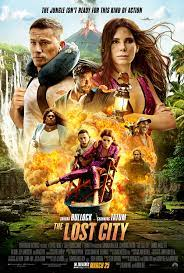

Everything Everywhere All At Once
To attempt to describe Everything Everywhere All At Once in words alone does this dizzying new classic a deep disservice. It’s a trip that must be experienced, felt, given in to, much like the multiverse-jumping adventure that its main character Evelyn Wang (Michelle Yeoh) finds herself facing. It’s convoluted but grounded, wild but humane, extremely ostentatious but truly affecting. Much like one character observes ("Here, all we get are a few specks of time where any of this actually makes sense!”), the film can be overwhelming and chaotic, but those willing to allow their minds and hearts to be exponentially and unexpectedly expanded will never forget it.

Fictional
The 100
Maybe a post-apocalyptic world doesnot have to be all dust and cannibals. According to the CW, it could boast pretty teens, too.Consider the scenario given to us in The 100. Oh, things appear bleak at first. Civilization was obliterated by nuclear war nearly a century ago, and the remnants of humanity floated above their one-time home on a collection of space stations called the Ark. When the station went past its expiration date, its leaders sent a bevy of wayward teens—the 100—down to check terra firma out and see if the ol’ gal was habitable again.
Comedy
The Lost City
A reclusive romance novelist on a book tour with her cover model gets swept up in a kidnapping attempt that lands them both in a cutthroat jungle adventure.
